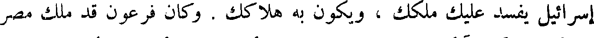
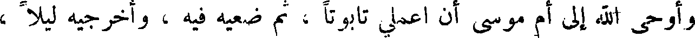
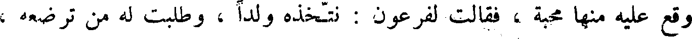
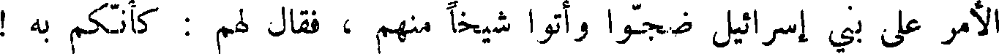
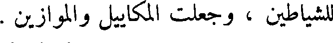
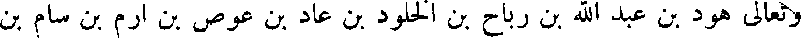
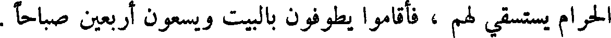
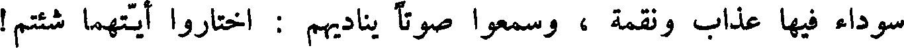
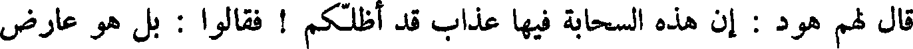

File: 000900.gt.txt (if the image is defective, simply delete all Arabic text and the line will be excluded)

إسرائيل يفسد عليك ملكك ، ويكون به هلاكك . وكان فرعون قد ملك مصر
File: 000901.gt.txt (if the image is defective, simply delete all Arabic text and the line will be excluded)
دهرا طويلا ممتعا بالسلامة ، حتى قال : أنا ربكم الأعلى ؛ فأمر فرعون ،
File: 000902.gt.txt (if the image is defective, simply delete all Arabic text and the line will be excluded)
فوضع على كل امرأة حامل من بني إسرائيل حرسا ، فكانت لا تلد منهن امرأة
File: 000903.gt.txt (if the image is defective, simply delete all Arabic text and the line will be excluded)
غلاما إلا قتل ولدها ، فلما جاء أم موسى المخاض قالت لها القابلة : أنيء اكتم
File: 000904.gt.txt (if the image is defective, simply delete all Arabic text and the line will be excluded)
عليك ! فلما ولدت قالت للحرس : إنما خرج منها دم .
File: 000905.gt.txt (if the image is defective, simply delete all Arabic text and the line will be excluded)

وأوحى الله إلى أم موسى أن أعلمي تابوتا ، ثم ضعيه فيه ، وأخرجيه ليلا ،
File: 000906.gt.txt (if the image is defective, simply delete all Arabic text and the line will be excluded)
فاطرحيه في نيل مصر ! ففعلت ذلك ، وضربته الريح ، فطرحته إلى الساحل ،
File: 000907.gt.txt (if the image is defective, simply delete all Arabic text and the line will be excluded)
فرأته امرأة فرعون ، فدنت منه حتى أخذته ، فلما فتحت التابوت ورأت موسى
File: 000908.gt.txt (if the image is defective, simply delete all Arabic text and the line will be excluded)

وقع عليه منها محبة ، فقالت لفرعون : نتخذه ولدا ، وطلبت له من ترضعه ،
File: 000909.gt.txt (if the image is defective, simply delete all Arabic text and the line will be excluded)
فلم يأخذ من المرضعات ، حتى جاءت أمه ، فأخذ منها ، وشب أحسن شباب ،
File: 000910.gt.txt (if the image is defective, simply delete all Arabic text and the line will be excluded)
وبلغ في أسرع وقت ما لا يبلغ الصبيان .
File: 000911.gt.txt (if the image is defective, simply delete all Arabic text and the line will be excluded)
وكان يوسف قد قال لبني إسرائيل : إنكم لن تزالوا في العذاب حتى يأتي
File: 000912.gt.txt (if the image is defective, simply delete all Arabic text and the line will be excluded)
غلام جعد ، من ولد لاوي بن يعقوب ، يقال له موسى بن عمران . فلما طال
File: 000913.gt.txt (if the image is defective, simply delete all Arabic text and the line will be excluded)

الأمر على بني إسرائيل ضجوا وأتوا شيخا منهم ، فقال لهم : كأنكم به !
File: 000914.gt.txt (if the image is defective, simply delete all Arabic text and the line will be excluded)

فبينا هم في ذلك إذ وقف عليهم موسى ، فلما رآه الشيخ عرفه بالصفة ، فقال له :
File: 000915.gt.txt (if the image is defective, simply delete all Arabic text and the line will be excluded)
ما اسمك ؟ فقال : موسى قال : ابن من ؟ قال : ابن عمران . فقام هو والقوم
File: 000916.gt.txt (if the image is defective, simply delete all Arabic text and the line will be excluded)
وفي زمانه ظهر السحر ، والكهانة ، والطيرة ، وذبح الناس أولادهم
File: 000917.gt.txt (if the image is defective, simply delete all Arabic text and the line will be excluded)

للشياطين ، وجعلت المكاييل والموازين .
File: 000918.gt.txt (if the image is defective, simply delete all Arabic text and the line will be excluded)
وكانت حياة ناحور مائة وثمانيا وأربعين سنة ، وكانت جبابرة ذلك العصر
File: 000919.gt.txt (if the image is defective, simply delete all Arabic text and the line will be excluded)
عاد بن عوص بن ارم بن سام بن نوح ، وكانوا قد انتشروا في البلاد ، وكانت
File: 000920.gt.txt (if the image is defective, simply delete all Arabic text and the line will be excluded)
منازلهم بين أعالي حضرموت إلى أودية نجران ، فلما عاثوا وعتوا بعث الله تبارك
File: 000921.gt.txt (if the image is defective, simply delete all Arabic text and the line will be excluded)

وتعالى هود بن عبد الله بن رباح بن الخلود بن عاد بن عوص بن ارم بن سام بن
File: 000922.gt.txt (if the image is defective, simply delete all Arabic text and the line will be excluded)
نوح ، فدعاهم إلى عبادة الله تعالى ، والعمل بطاعته ، اجتناب المحارم ،
File: 000923.gt.txt (if the image is defective, simply delete all Arabic text and the line will be excluded)

فكذبوه ، فقطع الله عنهم المطر ثلاث سنين ، فجهوا وفدا لهم إلى البيت
File: 000924.gt.txt (if the image is defective, simply delete all Arabic text and the line will be excluded)

الحرام يستسقي لهم ، فأقاموا يطوفون بالبيت ويسعون أربعون صباحا .
File: 000925.gt.txt (if the image is defective, simply delete all Arabic text and the line will be excluded)
ثم رفعت لهم سحابتان : إحداهما بيضاء فيها غيث ورحمة ، والأخرى
File: 000926.gt.txt (if the image is defective, simply delete all Arabic text and the line will be excluded)

سوداء فيها عذاب ونقمة ، وسمعوا صوتا يناديهم : اختاروا أيتهما شئتم !
File: 000927.gt.txt (if the image is defective, simply delete all Arabic text and the line will be excluded)
فقالوا : اخترنا السوداء ! فمرت ، وهي على روؤسهم ، فلما قربت من البلاد
File: 000928.gt.txt (if the image is defective, simply delete all Arabic text and the line will be excluded)

قال لهم هود : أن هذه السحابة فيها عذاب قد أظلكم ! فقالوا : بل هو عارض
File: 000929.gt.txt (if the image is defective, simply delete all Arabic text and the line will be excluded)
ممطرنا ، فأقبلت ريح سوداء لأتمر بشيء إلا أحرقته ، فما نجا منهم إلا هود ،
To Save: `Ctrl+s`, make sure to choose `Webpage, complete`!